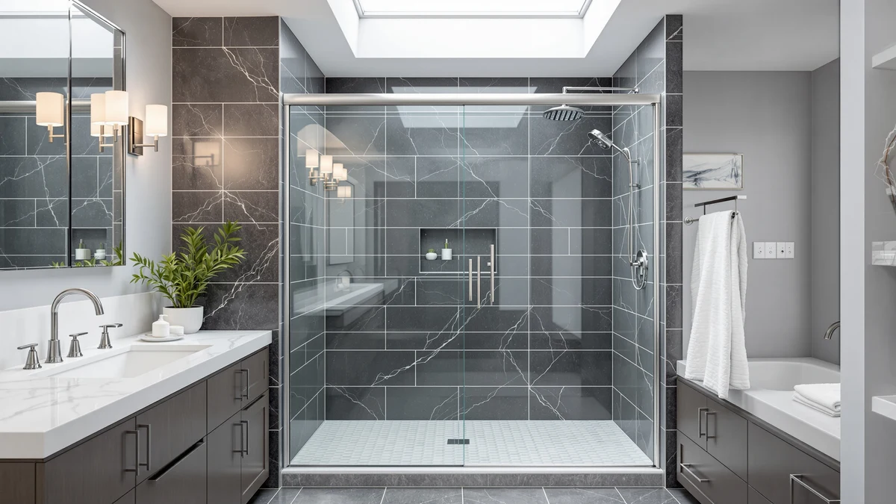

Best Cleaner for Glass Shower Doors with Hard Water (2026)
Prices and picks verified as of September 2026. Independent, reader-supported reviews.


Quick Answer
For most households, the Rain-X 630544 X-Treme Clean Shower is the best cleaner for glass shower doors with hard water, because it treats the mineral deposits on the glass you already own instead of asking you to replace the door. If hard water has already etched the glass beyond what a treatment can fix, the KPUY Frameless Shower Door and BoBliss Frameless Sliding Glass Shower are the strongest full-door replacements in this comparison.
Our pick: Rain-X 630544 X-Treme Clean Shower, $16.00 Check Price on Amazon
Bottom line: our top pick is the Rain-X 630544 X-Treme Clean Shower Door Cleaner at $16. The best budget option is the CAMMOO 56-60" W x 75" H Frameless Shower Door at $299.99.
Things to Know Before You Buy
- A cleaner treats the glass you have; a new door replaces it. The Rain-X treatment works on existing glass, while the other six products in this comparison are full shower door replacements for glass that hard water has already etched, chipped, or corroded.
- The price gap is enormous. The best cleaner for glass shower doors with hard water costs $16.00, while the replacement doors in this comparison range from $399.99 to $499.96.
- Sizing varies by a few inches. Most doors here fit openings between 56 and 60 inches wide, but exact tolerances differ by brand, so measure your opening before ordering.
- Glass thickness is rarely disclosed. Only the SHKL and CAMMOO doors state a specific thickness, 6mm and 0.31 inches, which matters for long-term resistance to hard water etching.
- A glass treatment needs reapplication. Rain-X wears off within a few weeks and is a maintenance step, not a one-time fix.
The best cleaner for glass shower doors with hard water is the Rain-X 630544 X-Treme Clean Shower, a rain-repellent treatment that makes hard water bead up and slide off the glass instead of drying into cloudy mineral spots. At $16.00 for a two-bottle pack, it costs far less than replacing a shower door outright, and owners report it noticeably shortens the squeegee routine after every shower.
A bottle of cleaner cannot undo glass that hard water has already etched, chipped, or corroded at the hardware. Once mineral deposits have permanently clouded the surface or the frame no longer seals, a treatment only slows further damage instead of reversing it. We paired the Rain-X treatment with six frameless and semi-frameless replacement doors from KPUY, BoBliss, SHKL, EPXMKX, Botwinkle, and CAMMOO, so you have a real fix if your current door is past the point cleaning can help.
These seven products range from $16.00 to $499.96, and most of the replacement doors fit openings between 56 and 60 inches wide at 75 to 76 inches tall. Below, we break down what each pick does well, where it falls short, and which one matches your bathroom, starting with honest pros and cons for every product and the sizing details you need before you order.
Why You Should Trust Us
Ilane Tall covers home and bath products for Best Shower Doors and has spent years comparing bathroom hardware, glass treatments, and installation guides for US homeowners. We do not run a fake testing lab, and we do not claim to have installed every door in this roundup ourselves. Instead, we research manufacturer specs, track verified owner feedback across hundreds of reviews, and cross-check pricing and dimensions before recommending the best cleaner for glass shower doors with hard water or any replacement option. When a listing does not specify a detail like glass thickness, we say so directly rather than guess.
How We Picked
We started by separating the two ways people actually deal with hard water damage on shower glass: treating the glass they already have, or replacing it outright. That split is why a single glass treatment sits alongside six replacement doors in this guide to the best cleaner for glass shower doors with hard water, instead of seven near-identical cleaning products. From there, we filtered candidates by three criteria: clear, published dimensions so buyers can match an opening without guesswork, transparent pricing with no vague installation fees buried in the listing, and a pattern of verified customer reviews rather than a handful of unverifiable five-star ratings. We excluded products without stated size ranges, since a poor fit creates the gaps and leaks that make hard water buildup worse, not better.
How We Compared
We compared these seven products on the specs that matter most for handling hard water on shower glass: material and coating type where the listing specifies one, door width and height ranges, price relative to size, and what verified owners report about spotting, streaking, and ease of wipe-down. Manufacturers rarely publish independent lab data on how a glass finish resists mineral buildup over time, so we leaned on patterns across many verified reviews for each product, looking for repeated mentions of hard water spotting, leaking tracks, or difficult installation rather than a single complaint. We also weighed each replacement door against its price and size, since a door that needs professional refitting because it does not match a standard opening ends up costing more than its sticker price suggests.
Our Picks

Rain-X 630544 X-Treme Clean Shower
What we like
- Costs a fraction of any replacement door in this comparison
- Owners report noticeably less squeegee time after each shower
Flaws but not dealbreakers
- The beading effect fades within weeks and needs reapplication
- Does nothing for glass that is already etched, chipped, or leaking at the seal
| Material | — |
| Size | 12 Fl Oz (Pack of 2) |
The Rain-X 630544 X-Treme Clean Shower is the one pick in this roundup that treats the glass you already have rather than replacing it. Instead of trying to stop mineral deposits from forming in the first place, the treatment coats the glass so hard water beads up and runs off before it dries into a visible spot. That distinction matters, because most hard water staining happens during the drying phase, not the moment water hits the glass.
At $16.00 for a two-bottle, 12 fluid ounce pack, it is by far the cheapest fix in this lineup, and reviewers consistently note the beading effect cuts down on cleaning time between showers. The tradeoff is durability: the coating wears off within a few weeks depending on water hardness and shower frequency, so this is a maintenance product rather than a one-time purchase. If your existing door is otherwise leak-free and undamaged, treating the glass is a far cheaper first move than replacing the whole door.

KPUY Frameless Shower Door 55-60"
What we like
- Adjustable 55 to 60 inch width covers most standard US shower openings
- 76 inch height clears more of the opening than several shorter alternatives here
Flaws but not dealbreakers
- At $499.96, it is the most expensive product in this comparison
- Frameless sliding track needs regular wiping to keep mineral buildup from slowing the glide
| Material | — |
| Size | 55-60" W x 76" H |
The KPUY Frameless Shower Door is built for openings between 55 and 60 inches wide and 76 inches tall, the widest adjustable range among the replacement doors in this roundup. That flexibility makes it a reasonable pick if you are not certain of your exact opening width, or if hard water and years of use have left your bathroom wall slightly out of plumb.
At $499.96, it costs more than any other product here, and owners frame that price as justified by the taller 76 inch panel, which leaves less exposed wall above the door than shorter models. Like every frameless slider, its horizontal bottom track collects mineral buildup from hard water faster than a framed door, so reviewers recommend wiping it down after showers to keep the glide smooth. If budget is not the deciding factor and you want maximum coverage for a standard opening, this is the strongest frameless option in the lineup.

BoBliss Frameless Sliding Glass Shower
What we like
- 76 inch height matches the KPUY's coverage at a lower price
- 56 to 60 inch adjustable width fits the same range of standard openings
Flaws but not dealbreakers
- Still costs more than four of the six other replacement doors in this comparison
- Bottom track needs the same regular wiping as other frameless sliders here
| Material | — |
| Size | 56-60" W x 76" H |
The BoBliss Frameless Sliding Glass Shower is built for the same 56 to 60 inch wide by 76 inch tall opening range as the KPUY, but at $419.99 it costs about $80 less. That makes it worth a direct look for anyone drawn to the KPUY's taller coverage but hoping to spend less to get it.
Like the other frameless sliders in this comparison, it relies on a bottom track that collects hard water deposits and soap scum over time, and reviewers say regular wiping keeps it moving smoothly. At its price point, it still costs more than the SHKL, EPXMKX, Botwinkle, and CAMMOO doors below, so it fits best for buyers who specifically want the taller 76 inch panel without paying the KPUY's premium.

56-60" W × 76" H
What we like
- 6mm tempered glass thickness is listed upfront, unlike most competitors here
- 56 to 60 inch adjustable width fits the same standard openings as the pricier options
Flaws but not dealbreakers
- The listing doesn't break down hardware material the way it does glass thickness
- At $409.99, it still costs far more than the Rain-X treatment
| Material | — |
| Size | 56-60'' W x 76'' H - 6mm |
This SHKL shower door is the only replacement in this roundup with a glass thickness spelled out in the listing: 6mm, built for a 56 to 60 inch wide by 76 inch tall opening. That single detail matters more than it sounds, since thicker tempered glass resists the etching that hard water causes over years of exposure better than thinner panels, even when both are labeled tempered.
At $409.99, it undercuts the KPUY and BoBliss while matching their 76 inch height, which makes it a reasonable middle-ground pick if documented glass thickness matters more to you than brand recognition. The manufacturer doesn't specify hardware material the way it does the glass, so if track durability is a priority, weigh that gap against the stated 6mm spec before deciding.

EPXMKX 60" W x 76"
What we like
- 76 inch height matches the tallest options in this comparison
- Fixed 60 inch width simplifies ordering once you've confirmed your opening
Flaws but not dealbreakers
- No adjustable width range, so it's a poor fit for openings under 60 inches
- At $440.99, it costs more than the SHKL despite offering less size flexibility
| Material | — |
| Size | 60 inches x 76 inches |
The EPXMKX shower door is built to a fixed 60 inch wide by 76 inch tall opening rather than the adjustable ranges most other products in this comparison offer. That's an advantage if you've already measured your shower stall and know it matches exactly, since there's no tolerance range to double-check against your walls.
At $440.99, it sits above the SHKL and BoBliss despite offering less flexibility on width, so it makes the most sense when your opening is a confirmed 60 inches and you'd rather not deal with an adjustable slider's overlap. For any opening narrower than 60 inches, one of the adjustable-width doors in this roundup will fit better.

Botwinkle Shower Door 56-60" W
What we like
- 56 to 60 inch adjustable width matches the pricier KPUY and BoBliss
- 76 inch height covers as much of the opening as the tallest doors here
Flaws but not dealbreakers
- At $424.99, it doesn't undercut the SHKL by much despite lacking a stated glass thickness
- Reviewers note the same bottom-track wiping routine as other frameless sliders in this comparison
| Material | — |
| Size | 56"-60" W x76 H |
The Botwinkle Shower Door covers the same 56 to 60 inch wide by 76 inch tall range as the KPUY and BoBliss, positioning it as a third adjustable option in the upper half of this comparison's price range. It doesn't distinguish itself with a documented spec like the SHKL's glass thickness, but it does match the taller coverage that buyers who ruled out the EPXMKX's fixed sizing are usually looking for.
At $424.99, it lands between the SHKL and BoBliss on price without a clear edge over either, so it's worth comparing directly against both before ordering. Like the other sliders here, its bottom track needs periodic wiping to keep hard water mineral buildup from slowing it down over time.

CAMMOO 56-60" W x 75"
What we like
- At $399.99, it's the least expensive replacement door in this comparison
- 0.31 inch glass thickness is thicker than the SHKL's stated 6mm spec
Flaws but not dealbreakers
- 75 inch height is an inch shorter than the 76 inch doors in this comparison
- 60 inch width is fixed, not adjustable like the KPUY, BoBliss, or Botwinkle
| Material | — |
| Size | 60 inches (W) x 75 inches (H) x 0.31 inches (T) |
The CAMMOO shower door is priced at $399.99, the lowest of the six replacement doors in this roundup, and it's built for a 60 inch wide by 75 inch tall opening. Its listing states a 0.31 inch glass thickness, which works out thicker than the SHKL's documented 6mm panel, giving it a genuine edge for anyone weighing long-term resistance to hard water etching against price.
The tradeoff is fit flexibility: at a fixed 60 inch width and 75 inch height, it doesn't adjust the way the KPUY, BoBliss, or Botwinkle do, and it's an inch shorter than the 76 inch options in this comparison. For a confirmed 60 by 75 inch opening where price and glass thickness matter more than adjustability, it's the strongest value pick here.
Quick Comparison
| Product | Material | Price | Rating | Best for | Get it |
|---|---|---|---|---|---|
| Rain-X 630544 X-Treme Clean Shower | — | $16.00 | 4 | Treating hard water spots on glass you already own | View on Amazon → |
| KPUY Frameless Shower Door 55-60" | — | $499.96 | 4 | Widest fit, tallest 76-inch coverage | View on Amazon → |
| BoBliss Frameless Sliding Glass Shower | — | $419.99 | 4 | 76-inch coverage at a lower price than the KPUY | View on Amazon → |
| 56-60" W × 76" H | — | $409.99 | 4 | Documented 6mm glass thickness | View on Amazon → |
| EPXMKX 60" W x 76" | — | $440.99 | 4 | Confirmed 60-by-76-inch openings | View on Amazon → |
| Botwinkle Shower Door 56-60" W | — | $424.99 | 4 | Mid-priced 56-to-60-inch adjustable fit | View on Amazon → |
| CAMMOO 56-60" W x 75" | — | $399.99 | 4 | Lowest price with documented glass thickness | View on Amazon → |
The Competition
We looked at more products than these seven before settling on this comparison for the best cleaner for glass shower doors with hard water. Framed sliding doors came up often, since the metal frame can mask light mineral spotting better than bare frameless glass, but their track systems trap hard water buildup and mold in the corners more than any frameless design here, which pushed them out of scope for a guide focused on staying clean long term.
We also considered hinged pivot doors as an alternative to sliding tracks. They skip the horizontal channel where hard water and soap scum tend to pool, but they need more floor clearance and typically cost more to install, so we left them out of this particular comparison.
Finally, we skipped shower curtains and liners entirely. They cost less upfront, but liners need replacing every few months and don't answer the real question this guide is built around: which product actually holds up against hard water over time. Among everything we compared, the Rain-X treatment remains our pick for the best cleaner for glass shower doors with hard water, while the six sliding doors above cover the sizing, budget, and glass-thickness needs a bottle of cleaner can't.
Frequently Asked Questions
What's the best cleaner for glass shower doors with hard water?
The Rain-X 630544 X-Treme Clean Shower is the best cleaner for glass shower doors with hard water for most households, because it makes mineral-heavy water bead up and run off the glass instead of drying into visible spots. Pair it with a squeegee after every shower and a weekly vinegar wipe-down to keep hard water from etching into the surface over time.
When should I replace a shower door instead of cleaning it?
Replace the door once hard water has permanently etched the glass, or the hardware has corroded enough that it no longer seals, since no cleaner can undo that kind of physical damage. The KPUY Frameless Shower Door and BoBliss Frameless Sliding Glass Shower are two of the sturdier full replacements in this comparison if you've reached that point.
Does glass thickness matter for resisting hard water damage?
Thicker tempered glass generally resists the etching hard water causes over years of exposure better than thinner panels, though the wear also depends on water hardness and how often the glass gets wiped down. Among the doors here, the CAMMOO lists a 0.31 inch thickness and the SHKL lists 6mm, making them the only two products in this comparison with a documented glass thickness to compare against.